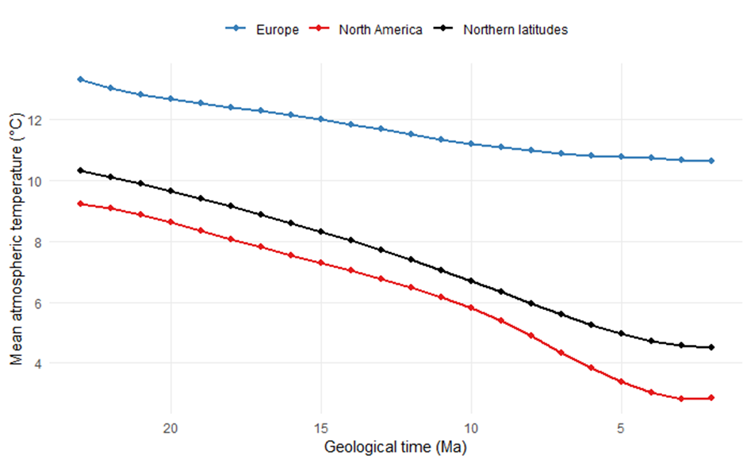
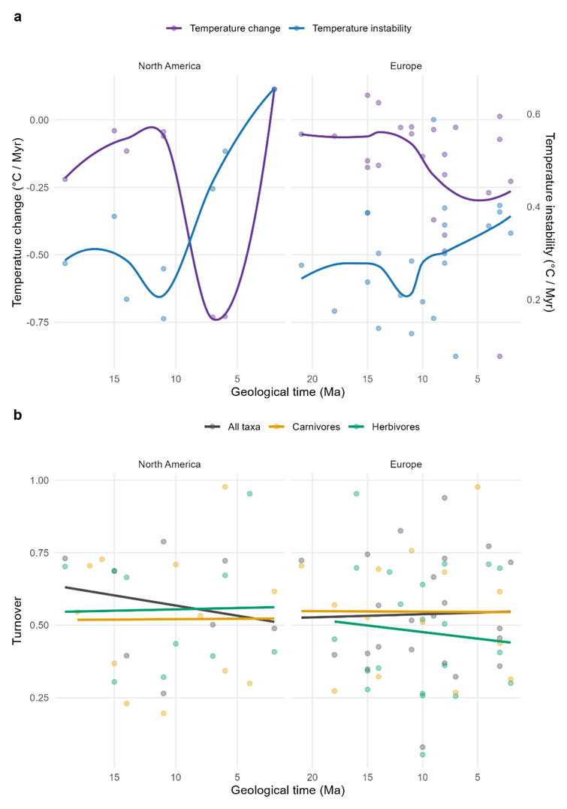
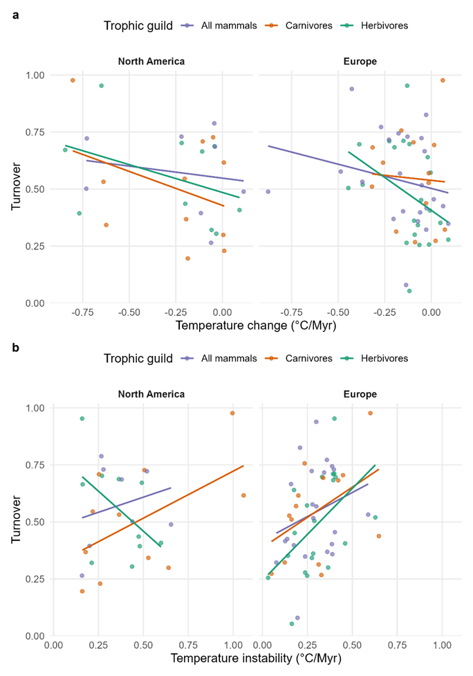

1 Climate change drove the deep-time assembly of biological diversity
Often restricted by the availability of historical data, the study of biodiversity assembly often focuses on contemporary environmental conditions and short-term biodiversity surveys. Newly available paleoclimatic reconstructions combined with georeferenced and dated fossil records offer the opportunity to elucidate how deep-time dynamics have shaped the assembly of biodiversity. Here, using spatially explicit paleo-climatic reconstructions and fossil records for North America and Europe, we evaluate the relative effects of the magnitude of directional climate change, and the instability of climate on the replacement of mammal taxa through time and across trophic levels. Over the last 20 million years in the Neogene, emerged as the dominant drivers of large mammal compositional turnover. Our results show that a 1 °C Ma⁻¹ directional change in temperature reduced taxonomic replacement by approximately 25 %, whereas a 1 °C Ma⁻¹ increase in temperature instability reduced replacement by 30%. Climatic instability more strongly affected herbivore turnover than carnivore turnover, but responses were highly dependent across continents. Such pattern likely reflects a tighter coupling of herbivores to climate-driven changes in plant community composition, whereas having only indirect effects in higher trophic levels such as predators. These results suggest that with ongoing rates of climate warming in the order of 0.2–0.3 °C per decade, a severe and unpredictable reorganization of global biodiversity can be expected.
Communty assembly, Paleoecology, Fossil turnover, Paleoecological dynamics, Large-mammals, Neogene
1.1 Introduction
The biological diversity we see today has assembled over millions of years with evolutionary processes unfolding together with global climate change across geological time. The formation of global biogeographic regions, for example, is often attributed to plate tectonics movement and historical climate (Mazel et al., 2017). Nevertheless, the growing availability of spatially and temporally explicit biodiversity and paleoclimatic data offer new opportunities to infer the role of pre-historical climate change in the genesis of global biodiversity (Kocsis et al., 2021; Briega-Alvarez et al., 2025).
Over deep time, the influence of climate change on modern biodiversity can be tracked in repeated episodes of extinction, diversification, and biodiversity reorganization (Albert & Carvalho 2011; Morales-Garcia 2020; Daru et al., 2017). Fossil records in deep time provide a window into those evolutionary episodes (Jackson & Blois 2015; DiMichele et al., 2004; Erwin 2009) and additional insights into processes that extend well beyond the Quaternary (0-2.8Ma) (Blanco et al. 2021; Mottl et al. 2021; Jabot et al. 2020), which has been the primary focus of previous work on the topic. Digitally available fossil datasets with geo-chrono-referenced fossil records (e.g. NOW, PBDB fossil databases) (Vzliobaite et al., 2023) open new opportunities for modelling the assembly of biodiversity across the geological time scale (Jablonski & Shubin 2015; Blanco et al. 2021; Mottl et al. 2021; Jabot et al. 2020). When integrated with spatiotemporal paleoclimatic reconstructions, fossil records could reveal how planetary climate change shaped biodiversity in the absence anthropogenic stressors (Chang & HilleRisLambers 2016; DiMichele et al., 2004; Lyons & Wagner 2009).
The Neogene (23Ma – 2Ma) was an evolutionary dynamic period in the build-up of global biodiversity. Periods of drastic climatic changes led to the formation of many current temperate biomes (Zachos et al, 2001 ) and coincided with the emergence of many modern plant and animal families (Gunnell et al., 1995; Gibert et al., 2022) as well as the extinction of many others that were previously widespread during the Paleogene (66Ma – 23 Ma) (Costeur et al., 2004). During this period, the Earth’s climate transitioned from a greenhouse to an icehouse state, culminating in the onset of the Northern Hemisphere glaciation around 2-3 million Ma (Kennett et al., 1995). At least two complementary attributes of paleoclimatic dynamics could have influenced the assembly of regional biodiversity during that period. First, the magnitude of directional climatic change between adjacent geological periods, expressed as the velocity of climate change (in C) per unit of time (1Ma) (Zachos et al., 2001; Galvan et al., 2025). Second, the climatic instability, expressed as spatiotemporal dispersion in local climate change rates (Vrba, 1992; Dynesius & Jansson, 2000; Finnegan et al., 2015). Climate change magnitude and climate instability across the Neogene could have jointly shaped the assembly of regional biodiversity, but their relative influence remains unexplored.
Episodes of high directional climate change could have increased rates of mammalian taxa replacement in regional biotas by triggering speciation events and/or increasing extinctions rates. Climate-driven species factories (Stebbins 1974; Bernor et al., 1996; Eronen et al., 2012) can emerge in regions with a high magnitude of directional climate change, such as increasing aridity or cooling, where preadapted taxa gain a competitive advantage, diversify, and give rise to new lineages suited to the conditions of the near future. For example, during the gradual cooling of Earth during the Neogene (23Ma – 2Ma), ecosystems transition from warm evergreen subtropical woodlands to cooler, more seasonal deciduous forests (Jablonski, 2008; Barnosky et al., 2011; Reddin et al., 2020), many forest-adapted mammal taxa declined or went extinct, while open-habitat specialists such as bovids and equids expanded through adaptive radiations driven by ecological specialization (Jernvall & Fortelius 2002; Raia et al. 2011). As North America became drier than Eurasia during the middle Miocene–Pliocene, arid-adapted groups such as horses, camels, and canids evolved there first and later invaded the Old World. In addition, directional shifts in climate change such as the transitions between prolonged warming and cooling phases (or vice versa) can precipitate extinction cascades but also promote adaptive reorganizations (Pinsky et al., 2025; Lewthwaite et al., 2017; Kiessling et al., 2024) depending on how rapidly populations and traits respond to the climatic change shift (Benton & Pearson, 2001; Pimm et al., 1988). Morphological and genetic data show that climate-driven changes in temperature, aridity, and productivity influence body size, tooth morphology, and dispersal, often with temporal lags in the evolutionary response (MacFadden, 2000; Hadly et al., 2004). During rapid environmental change, trait–climate mismatches increase range shifts, extinctions, leading to community reassembly and elevating taxonomic replacement.(Guerin et al., 2013; Fitzpatrick et al., 2013).
In contrast to species factories, which are macroevolutionary sources of diversification (Fortelius et al., 2014), climatically stable regions act as macroevolutionary sinks, preserving past diversity with limited contribution to future radiations (Stebbins 1974; Fortelius et al., 2014; Mirzaie Ataabadi et al., 2013; Vasconcelos et al., 2021). In climatically stable regions, low taxonomic replacement is expected mainly due to reduced extinction rather than increased speciation or immigration (Vasconcelos et al., 2022). Long-term climatic stability promotes lineage persistence within suitable environments, limiting range contraction and local extinction that drive taxonomic replacement. (Fortelius & Zhang, 2006; Casanovas-Vilar et al., 2010; Vasconcelos et al., 2021). For instance, during the Miocene (23Ma-5Ma), the Iberian Peninsula acted as a climatic oasis where suids, bovids, and small carnivores persisted after going extinct elsewhere in Europe (Casanovas-Vilar et al., 2010; Fortelius et al., 2014). Despite faunal exchange with Africa and Central Europe, these lineages in the Iberian peninsula likely maintained low local taxonomic replacement while supplying taxa to more climatically variable regions. (Vasconcelos et al., 2021; Agustí & Antón, 2002). These dynamics raise the question of whether climatic change and instability affect taxonomic replacement differently across trophic groups, and whether these historical measures better predict replacement than static contemporary climate gradients.
Here, we examine alternative hypotheses regarding the role of climate dynamics in driving the taxonomic replacement of mammalian fossil assemblage during the Neogene (Figure 1). Specifically, A) regions experiencing low levels of directional climatic change (i.e. magnitude) and high levels of instability are expected to show minimal fossil taxonomic replacement (Figure 1a.A, Figure 1b.A) (H1-stability), whereas those experiencing B) a high magnitude of climate change and low instability are expected to show elevated rates of taxonomic replacement. (Figure 1a.B, Figure 1b.B) (H2-directional change). Finally, C) a low magnitude of climate change and high instability may generate episodic pulses of taxonomic replacement without sustained faunal replacement (Figure 1a.C, Figure 1b.C) (H3-Oscillatory climate). D) When both climatic magnitude and instability are high, their effects may compound, producing accelerated and recurrent taxonomic replacement as ecosystems experience rapid and irregular environmental shifts. (Figure 1a.D, Figure 1b.D) (H4- compound instability).

1.2 Methods
Temporal scope
This study covers the Neogene period (23Ma - 2.6Ma). This geological period of Earth was characterized by significant global climatic changes (Kennett et al., 1995) and therefore provides an ideal case study. Broadly, the Neogene saw the emergence of many modern plant and animal families, as well as the extinction of many others that were previously widespread during the Paleogene (66Ma – 23 Ma) (Costeur et al., 2004). During this period, the Earth’s climate transitioned from a greenhouse to an icehouse state, culminating in the onset of the Northern Hemisphere glaciation around 2-3 million Ma (Kennett et al., 1995). During the Neogene, Northern Hemisphere ecosystems experience the transformation of tropical areas in high latitudes into open landscapes such as savannas and prairies (Retallack 1997; 2001), as well as the expansion of temperate and boreal forests (Budantsev 1992). These changes were driven by a combination of tectonic and oceanographic events, including the establishment of the modern-day Gulf Stream Atlantic Ocean current, the uplift of the Rocky Mountains in North America and the Alps in Europe (Retallack 1997; 2001; Kovar 2003; Barash 2011).
Data
Fossil data
For this study, we gathered large-mammal fossil data from the NOW database (Vzliobaite et al., 2023). Fossils of large mammals are particularly useful to uncover macro-evolutionary trends as they can preserve biogeographical patterns with high spatial fidelity (Darroch et al., 2021). Moreover, the results of centuries of paleontological research are now digitally available in aggregated fossil databases with standardized taxonomic nomenclature and geotagged records. Our queried subset of the database contained 18349 species level fossil records spanning six (6) mammal orders: Artiodactyla (40%), Carnivora (26%), Perissodactylia (24%), Primates (1.5%), and Proboscidea (8.6%). We assigned each fossil mammal record to a trophic guild and trophic role based on its taxonomic order. Orders dominated by plant-eating species (Proboscidea, Perissodactyla, and Artiodactyla) were classified as herbivores and primary consumers. Primates were classified as omnivores occupying intermediate trophic roles, and Carnivora were classified as carnivores occupying higher trophic levels. These trophic assignments were added to the fossil dataset by matching each record’s taxonomic order to a reference classification table, while retaining all fossil observations. We excluded records a) georeferenced outside the North America and Europe continents (3068 records), and b) where the genus was classified as indeterminate (“indet.”) (4215 records). We ended with a total of 11066 species level fossil records (Table S1).To reduce taxonomic bias in sampling completeness we focused subsequent analyses in records aggregated to the genus level, obtaining a total of unique 6843 genus-level fossil space-time observations.
Paleo-atmospheric temperature data
We used published reconstructed near-surface air temperatures for the Cenozoic (60 Ma to present) at 1 Myr temporal resolution (Hagen et al. 2019). Hagen’s paleoclimatic reconstructions integrate paleotopographic models from Scotese’s PaleoAtlas (Scotese & Wright, 2018) with lithological and fossil-based climate proxies, including coal, evaporites, bauxites, tillites, and high-latitude occurrences of palms and mangroves (Boucot et al., 2013).
Climatic structure was constrained using reconstructions of Köppen climatic zones projected onto paleogeographic maps at 5 Myr intervals. Mean annual temperatures were assigned to each Köppen zone based on modern temperature estimates and adjusted to match reconstructed Cenozoic changes in global mean temperature (Royer et al., 2004). To account for the effects of topography, zone-specific temperature lapse rates were derived from present-day elevation and WorldClim2 temperature data (Fick & Hijmans, 2017) and applied to paleotopographic reconstructions, yielding gridded temperature estimates through time.
We extracted the subset corresponding to the temporal span of our fossil data (23–2 Ma) and generated a temperature raster stack for North America and Europe (Figure S1), which was used to summarize large-scale temperature trajectories across major Northern Hemisphere regions.
Statistical analyses
To examine how climate change relates to large-scale patterns of large-mammal fossil turnover, we combined fossil occurrence data, biogeographic clustering techniques, and paleoclimate reconstructions into a unified analytical framework. Briefly, fossil records were grouped into spatiotemporal paleo-assemblages, and compositional turnover among these assemblages was used to identify coherent paleobiogeographic regions. Independently, long-term patterns of climate change were quantified from paleotemperature reconstructions. We then linked the average turnover within a paleobiogeographic region to both the magnitude and variability of climate change to test how climatic dynamics shape biogeographic faunal reorganization through time. All analyses were conducted for the complete mammalian dataset and repeated separately for herbivorous and carnivorous taxa.
Estimating climate change
The atmospheric temperature stack was converted to a location-by-time matrix in which rows represent spatial grid cells and columns represent time steps. We modeled each cell’s climate history using a spline-based smoother. Specifically, we constructed a B-spline basis over the sequence of raster layers (treated as ordered time points 23-2) and fit the smoother independently for each grid cell. Smoother flexibility was controlled by the basis dimension (df = 6) and polynomial degree (degree = 3). The fitted coefficients were estimated using ordinary least-squares matrix algebra, allowing the spline smoother to be solved efficiently for all spatial grid cells simultaneously. The approach employs a fixed B-spline basis with specified degrees of freedom and polynomial degree, without penalization or automatic smoothing parameter selection. This procedure yielded a smoothed atmospheric temperature time series for each grid cell across the full temporal extent. Rates of climate change were quantified as the first forward difference (dY) of the smoothed time series, representing discrete (n = 21) temporal changes in temperature between successive 1Ma time steps. These derivatives were subsequently standardized across grid cells to facilitate spatial comparison of relative climatic instability. Sensitivity analyses across a range of spline degrees and degrees of freedom produced qualitatively consistent spatial and temporal patterns, indicating that results were robust to reasonable variation in smoothing parameters (Figure S2). With the resulting climate change raster layers, we created a raster stack representing the spatiotemporal dynamics of atmospheric temperature change in (C/Ma)
Establishing fossil paleo-assemblages
To generate fossil paleo-assemblages, we used a hexagonal equal-area grid to assign fossil paleocoordinates to spatial bins at resolution 3 of Uber’s H3 geospatial indexing system, corresponding to an average distance of 103.6 km between adjacent cells. This procedure was implemented using the bin_space() function from the paleoverse R package (v1.4.0) (Figure S3). Temporally, fossil observations were assigned to discrete time bins defined by the midpoint between the minimum and maximum radiocarbon-based age estimates reported in the NOW database, with midpoints rounded using R’s round-to-even convention. Paleo-assemblages were then defined as the set of unique fossil genera occurring within each hexagonal cell and time bin (Figure S4). Assemblages containing fewer than three genera were excluded from subsequent analyses. In total, we generated 559 unique fossil paleoassemblages for all mammal taxa, 489 for herbivores, and 240 for carnivores.
Estimating turnover among fossil paleo assemblages
We constructed a genus-paleo assemblage incidence matrix representing the presence (1) or absence (0) of each genus across all paleo-assemblages in space and time. We calculated turnover between paleo assemblages using the Simpson dissimilarity index via the beta.sim output of the beta.pair() function in the betapart R package (Figure S5). This measure emphasizes species turnover by separating the degree of shared taxa emerging only from differences in species richness effects (i.e. nestedness) (Baselga et al., 2013), making it a more reliable basis for tracking large-scale biogeographical patterns from sparse fossil records (Figure S5).
Delineating paleobiogeographic regions
We used a stochastic block model (SBM) fitted to the paleo assemblage dissimilarity matrix and cluster fossil paleo-assemblages into separate spatiotemporal units representing distinct paleobiogeographic regions. These paleobiogeographic regions are subsets of fossil localities reflecting shared biogeographic histories. By modeling assemblage dissimilarity as a network and allowing blocks to emerge probabilistically, the SBM identifies regions as emergent network-level structures. Spatial and Temporal distance matrices were used to inform the SBM’s prior structure (Figure S6), enabling it to partition assemblages into paleobiogeographic regions that not only share similar taxa but are also proximally located in space and/or time. Spatial distances were computed as great-circle distances (in kilometers) between the paleocoordinates (rotated to their Neogene positions) of each assemblage using the earth.dist() function from the fossil R package. Temporal distances were calculated as absolute differences (in millions of years) between the midpoint ages between each paleo-assemblage pair.
The SBMs were fitted across a range (0-60) of candidate cluster numbers (K), and the optimal number of groups was selected based on maximizing the Integrated Completed Likelihood (ICL) criterion (Figure S8). This criterion balances model fit and parsimony, penalizing overly complex models while favoring those that capture robust structure. We employed spectral clustering for model initialization. The resulting SBM outputs an ordered fossil paleo assemblage dissimilarity matrix into blocks that summarizes the average dissimilarity of fossil paleo assemblages both within and between paleobiogeographic regions (Figure S9).
For this study, we focused only on the dissimilarities within a paleobiogeographic region. In other words, we extracted the diagonal elements of the SBM connectivity matrix. We also recorded among-region dissimilarity from the corresponding off-diagonal entries, but we did not consider them for further analysis. In total we defined, 30 paleobiogeographic regions for all taxa combined, 30 for herbivores only, and 24 for carnivores only.
Linking climate change to paleobiogeographic region turnover
We associated each fossil paleo assemblage with local climate change values by intersecting their time and location with the climate change raster stack and extracting the relevant climate change (dY) values at each paleo assemblage location. For each paleobiogeographic region and continent, we summarized climate change (dY) values into two complementary dimensions by a) calculating the mean slope of temperature change, representing directional climatic trends (i.e. climate change magnitude) and b) the standard deviation of temperature change slopes (i.e. climate change instability).
We examined relationships between paleobiogeographic region turnover and climatic dynamics using beta regression, appropriate for response variables bounded between zero and one. Turnover was modeled as a function of climate change magnitude (mean rate of temperature change) and climatic instability, while controlling for sampling effort using the number of paleoassemblages per paleobiogeographic region. Continent was included to account for differences in geographic isolation and paleobiogeographic context. To test whether climate–turnover relationships differed between continents, we compared models allowing interactions between climate predictors and continent to reduced additive models in which climate effects were shared across continents. Model comparisons were conducted using likelihood-ratio tests based on model log-likelihoods, and interaction terms were retained only when they significantly improved model fit. All models were fitted using a logit link
1.3 Results
Climate change in North America and Europe across the Neogene
Across the Neogene (23–2 Ma), mean atmospheric temperature declined in northern latitudes, from ~10.3 °C to 4.5 °C at the hemispheric scale, ~9.2 °C to 2.8 °C in North America, and ~13.3 °C to 10.6 °C in Europe (Figure 2). Europe remained consistently warmer than both North America and the hemispheric mean throughout the interval. The full temperature range (min–max), with minimum temperatures decreasing through time in all regions, particularly in North America, while maximum temperatures remained relatively stable near ~21–23 °C. Overall, temperature deltas between continents became larger toward the late Neogene. (Figure SX).

Cooling was consistently stronger in North America than in Europe throughout the Neogene. In North America, cooling rates intensified from approximately −0.17 °C Myr⁻¹ at ~22 Ma to a pronounced minimum of about −0.5 °C Myr⁻¹ during the late Miocene (~8–7 Ma), before weakening toward the late Neogene (Figure SX). This interval of accelerated cooling coincided with elevated climatic instability, which increased through the middle to late Miocene and declined thereafter. In contrast, Europe experienced more moderate and temporally stable cooling. European temperature instability was consistently lower than in North America, reaching a minimum during the middle Miocene.
Fossil dataset
After filtering and aggregation, the Neogene fossil dataset comprised 1,040 mammal species (427 genera) distributed across 1,407 fossil localities in Europe, and 731 species (286 genera) across 476 localities in North America. In both continents, herbivores represented the largest component of the fauna, accounting for 644 species and 253 genera in Europe, and 451 species and 170 genera in North America. Carnivores were less diverse, with 360 species (155 genera) in Europe and 280 species (116 genera) in North America, while omnivorous taxa (primarily primates) were rare and restricted only to Europe (36 species, 19 genera). Omnivorous taxa records were removed from the dataset and not considered in further analyses. Sampling density differed markedly between continents: North America exhibited a higher mean number of genera per locality (0.60) than Europe (0.30), a pattern that was consistent across trophic guilds. (Table S1)
Fossil paleoassemblages
Genus accumulation curves show non-linear increases in sampled richness with the number paleoassemblages across all time bins, continents, and trophic groups. Overall, North American paleoassemblages show lower standardized richness. Herbivores generally exhibit the steepest accumulation and highest asymptotic richness within most time slices, whereas carnivores and omnivores accumulate more gradually and tend to saturate at lower richness values (Figure S9). When richness is evaluated at a standardized sampling effort pronounced differences among trophic groups, continents, and time bins remain (Figure. S10). In Europe, herbivores consistently contribute the largest share of genus richness across most intervals, with carnivores forming a substantial but more variable component.
Fossil paleoassemblage dissimilarity
Across all taxa, the mean compositional turnover was 0.60 ± 0.17. Mean turnover is similar between Europe and North America for all taxa (Europe: 0.60; North America: 0.61). Herbivores show slightly higher mean turnover in North America (0.56) than in Europe (0.53), while carnivores show lower mean turnover overall, with values of 0.52 in Europe and 0.48 in North America. (Table S2)
Across all taxa, mean turnover exhibits substantial temporal variability in both continents, although linear fits indicate only modest net changes from the early to late Neogene (Figure 3b). In North America, all-taxa turnover shows a slight overall decline through time, whereas Europe exhibits a weak net increase, despite pronounced fluctuations within the interval. Herbivores display contrasting continental trajectories, with relatively stable turnover in North America but a gradual net decline in Europe. In contrast, carnivore turnover remains approximately constant in both continents While linear trends remain relatively constant for both herbivores and carnivores at both continents, there is considerable short-term variability. (Table S3).
Paleobiogeographic regions
The SBM identifies 30 paleobiogeographic regions when all taxa are included, 30 regions when only herbivores are considered, and 24 regions when considering carnivores only. In Europe, paleobiogeographic regions are distributed across a broad and overlapping range of geological ages. In North America, fewer regions are identified, and their temporal ranges are more distinct, with clearer separation across geological time. This pattern was similar for herbivores and carnivores (Figure S11). Mean within-region similarity (diagonal of the SBM connectivity matrix) differs modestly among trophic groupings. Regions defined using all taxa show the highest average similarity (mean = 0.555), followed by carnivores (mean = 0.509), while herbivore regions show lower mean similarity (mean = 0.487). Variability in within-region similarity is comparable across groups (SD ≈ 0.197–0.204), indicating that differences among trophic groupings are driven primarily by shifts in mean internal cohesion rather than from value dispersion. Mean turnover remains broadly stable through time and across continents. The temporal midpoint of paleobiogeographic regions has no consistent effect on turnover in any trophic grouping (all p ≥ 0.05), and continental differences are not detected (Table 1; Figure 2).
Sampling intensity shows a significant positive effect on turnover when all taxa are pooled (β = 0.04, p = 0.011) and for herbivores (β = 0.05, p = 0.002), whereas time midpoint and continent effects are not significant in either case (Table 1). In contrast, carnivore turnover shows no relationship with sampling intensity (β = −0.01, p = 0.892) and exhibits minimal explanatory power overall (R² = 0.05). (Figure S12; Table 1).
Linking Climate Change Variables to Fossil Dissimilarity

Model comparison reveals a clear trophic contrast in how climatic effects on paleobiogeographic turnover vary across continents. For assemblages pooling all taxa, adding historical and contemporary climate predictors does not improve model fit relative to a sampling-only model (Δχ² = 2.25, df = 2, p = 0.325). Similarly, allowing climate effects to vary between Europe and North America does not improve fit for all taxa, supporting a common, additive climate response across continents. In contrast, herbivore paleobiogeographic turnover shows strong evidence for continent-specific climate responses. Interaction models allowing the effects of climate change magnitude, climatic instability, and mean temperature to differ between Europe and North America fit the data significantly better than additive models (Δχ² = 14.88, df = 3, p = 0.0019). For carnivore paleobiogeographic turnover, interaction terms do not improve model fit (Δχ² = 2.64, df = 3, p = 0.451), and turnover is adequately described by additive effects shared across continents.
Across all taxa, best-fit models for paleobiogeographic turnover shows weak non-significant associations with historical climatic predictors. Neither temperature change (β = −1.10, p = 0.113) nor climatic instability (β = −1.08, p = 0.388) is significantly related to turnover, and no continental differences are detected. In contrast, sampling effort shows a consistent positive effect (β = 0.05, p = 0.008). However, herbivores exhibit a markedly different pattern. Climatic instability has a strong negative main effect on turnover (β = −5.14, p = 0.003), but this effect varies sharply between continents, as evidenced by a strong positive instability × continent interaction (β = 7.98, p < 0.001). Contemporary temperature is also negatively associated with turnover (β = −0.54, p = 0.014), whereas temperature change magnitude shows no detectable effect (p = 0.982). Pronounced continental differences are present (β = −11.57, p = 0.001), and together these predictors explain considerable variation in herbivore paleobiogeographic turnover (R² = 0.50). In carnivores, turnover shows no significant response to temperature change or contemporary temperature, and the effect of climatic instability is weak and marginal (β = 1.54, p = 0.063). Continental differences are small but statistically detectable (β = 0.77, p = 0.035), while sampling effort is negatively associated with turnover (β = −0.09, p = 0.023) (Figure 4, Table 2).

Predicted effects show that identical changes in climatic conditions can lead to markedly different turnover responses across continents, a pattern that is pronounced only for herbivore assemblages. For herbivores, a standardized increase in climatic instability results in a strong increase in predicted turnover in Europe (from 0.53 to 0.95; +42.1 percentage points), but a sharp decrease in North America (from 0.63 to 0.01; −62.4 percentage points), indicating opposing continental responses. In contrast, an equivalent increase in temperature change magnitude produces a moderate decline in herbivore turnover in Europe (from 0.53 to 0.27; −26.3 percentage points) but a slight increase in North America (from 0.63 to 0.64; +0.4 percentage points). For assemblages pooling all taxa, increases in climatic instability and temperature change magnitude are associated with consistent decreases in predicted turnover in North America (−27.7 and −25.4 percentage points, respectively), with no corresponding European effect detected. Carnivore assemblages show more uniform responses across continents: increases in climatic instability elevate predicted turnover in both Europe (+26.3 percentage points) and North America (+34.8 percentage points), while temperature change magnitude reduces turnover similarly in both regions (−24.3 and −21.3 percentage points, respectively). (Table S5).